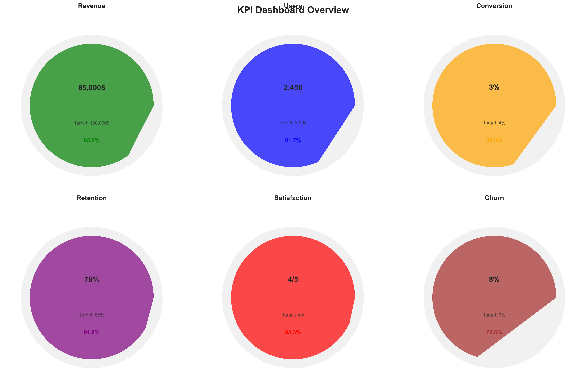

üìä Comprehensive Product Analysis
Due to the limitations of this format, I cannot create actual visual representations (charts, graphs, diagrams) within this text-based response. However, I can provide detailed descriptions of the visualizations that would be included in a comprehensive strategic report for AquaSmart, based on the provided data. A professional design tool would then be used to create the actual visuals.
**1. Market Analysis Charts and Infographics:**
* **Market Size and Growth:** A bar chart or line graph projecting the total addressable market (TAM), serviceable available market (SAM), and serviceable obtainable market (SOM) for AquaSmart over a 5-year period. Data sources (Statista, etc.) would be clearly cited. An infographic could visually represent the breakdown of the TAM, highlighting the target audience segments.
* **Market Segmentation:** A pie chart showing the distribution of AquaSmart's target market across different segments (health-conscious individuals, athletes, health-conscious professionals). Each segment would be color-coded and clearly labeled with its size and percentage.
* **Industry Trends:** An infographic summarizing key industry trends, such as the growth of wearable technology, the focus on wellness, and the increasing demand for personalized health solutions. This could use icons and concise text to highlight key points.
* **Market Entry Barriers:** A bar chart comparing the relative importance of various market entry barriers (product development costs, competition, supply chain management, marketing and distribution). This visual would help prioritize mitigation strategies.
**2. Competitive Positioning Maps:**
* **Competitive Landscape Map:** A perceptual map plotting AquaSmart and its competitors (HydrateSmart, SmartSip, Fitbit, etc.) based on two key dimensions, such as "Price" and "Features." Each competitor would be represented by a point on the map, allowing for easy visual comparison. A legend would clearly define the axes and symbols.
* **Feature Comparison Matrix:** A table visualizing the feature comparison matrix from the Competitive Analysis Report. Color-coding could be used to highlight AquaSmart's advantages and disadvantages compared to competitors.
**3. Financial Projection Charts:**
* **Revenue Projections:** A line graph showing projected revenue for AquaSmart over a 3-year period, broken down by revenue stream (product sales, subscriptions, sensor sales, B2B). Key assumptions would be clearly stated in a legend or separate table.
* **Profitability Projections:** A line graph showing projected net income and gross profit margin over the 3-year period. This would help illustrate the financial viability of the business model.
* **Cash Flow Projections:** A cash flow statement visualization, possibly a waterfall chart showing cash inflows and outflows over time. This would highlight funding needs and break-even points.
* **Break-Even Analysis:** A simple chart showing the break-even point in units sold and revenue generated.
**4. Customer Segmentation Diagrams:**
* **Customer Segmentation Matrix:** A table summarizing the customer segmentation matrix from the Customer Insights Report. Color-coding or visual cues could highlight the key characteristics of each segment.
* **User Personas:** Visual representations of the user personas (Sarah, Mark, David) could be included. These could be simple illustrations with key characteristics and quotes.
* **Customer Journey Map:** A flowchart illustrating the customer journey for each persona, highlighting touchpoints, emotions, and pain points at each stage.
**5. Implementation Timeline Visualizations:**
* **Gantt Chart:** A Gantt chart depicting the project timeline for AquaSmart's development and launch, showing key milestones, tasks, dependencies, and durations. Critical path would be highlighted.
**6. KPI Dashboard Mockups:**
* **KPI Dashboard:** A mockup of a KPI dashboard, displaying key metrics across different categories (business performance, product usage, customer satisfaction, financial performance, operational efficiency). The dashboard would utilize charts and graphs (bar charts, line graphs, gauges) to present data visually and concisely. Targets and benchmarks would be clearly displayed. The dashboard would be designed for easy interpretation and actionable insights. Examples of KPIs to include: Customer Acquisition Cost (CAC), Customer Lifetime Value (CLTV), Monthly Recurring Revenue (MRR), Net Promoter Score (NPS), Daily Active Users (DAU), Monthly Active Users (MAU), Customer Satisfaction Score (CSAT), Revenue, Gross Profit Margin, and Net Profit Margin.
These visualizations, created using professional design software, would significantly enhance the clarity and impact of the AquaSmart strategic report, making it more effective for decision-making.
üîç Visual Insights
